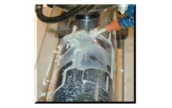

Nuestros
troqueles rotativos afilados a máquina y endurecidos fueron diseñados para
durar y creados para altas tolerancias y tirajes largos. ¡Y ofrecen el
rendimiento excepcional que Ud. espera de Wilson!
POR QUÉ EL AFILADO A MÁQUINA SIGNIFICA MAYOR
PRODUCTIVIDAD
Desde el
comienzo del troquelado rotativo, los rodillos de acero fueron grabados para
formar las plecas y luego las plecas fueron afilados a mano.. Aunque esto se consideraba la mejor opción en
ese momento, esta práctica también producía resultados inconsistentes. En la
actualidad, los troqueles rotativos de Wilson son el resultado de la última y
más avanzada tecnología, lo que produce tolerancias y rendimientos que alguna
vez se creyeron imposibles. En 1999, nuestro primer troquel prototipo acabado a
máquina fue enviado para la tarea de convertir película Compucal. En
comparación con los troqueles hechos a partir de métodos tradicionales, el
desempeño aumentó en más del doble, marcando el comienzo de una nueva era de
troquelado rotativo.
Aceros de
primera calidad, equipos CNC del siglo veinte y uno, procesos avanzados de enduricimiento,
tratamientos criogénicos, afilados a máquina y revestimientos para prolongar la
vida útil. Cuando se trata de troqueles rotativos, Wilson tiene la receta para
garantizar el rendimiento y la satisfacción del cliente.
TIPOS DE ACERO DISPONIBLES:
- El troquel
HT45 se utiliza para tirajes cortos de medio corte.
- El troquel
M80 está diseñado para tirajes cortos de corte completo o tirajes largos de
medio corte En comparación con el acero HT45, este acero logra un nivel
superior de dureza, lo que lo convierte en la opción perfecta para tirajes largos.
- El troquel Elite está diseñado para tirajes medianos
y largos cortando sustratos abrasivos.
- El troquel S100 es acero completamente
endurecido y diseñado para tirajes largos de medio corte y tirajes largos de metal
a metal. Este acero tiene un nivel mayor de dureza que el acero M80.
- El troquel M80 Crió ofrece la misma alta calidad que el acero M80
con la adición del tratamiento criogénico. Este tipo de tratamiento hace que el
acero sea mas duradero para conversiones de sustratos sinteticos delgados.
- El troquel T1000 ofrece la vida más prolongada
disponible para materiales abrasivos tal como Transferencia Térmica y Compucal.
Para obtener más información sobre estos productos o los tipos de acero, comuníquese con su representante de Wilson.

Los troqueles acabados a máquina están disponibles para aplicaciones sensibles a la presión y aplicaciones de metal a metal, incluyendo troqueles para cortar libros, troqueles de aspiracion con insertos intercambiables, troqueles asistidos por aire, troqueles con clavijas de resorte y troqueles macho/hembra para cajas plegadizas.